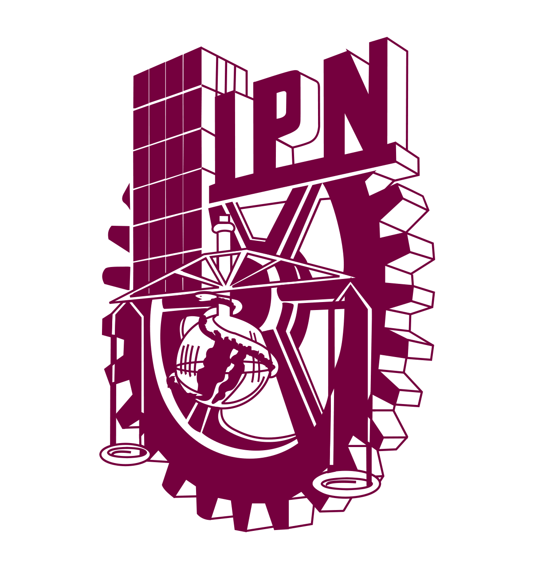
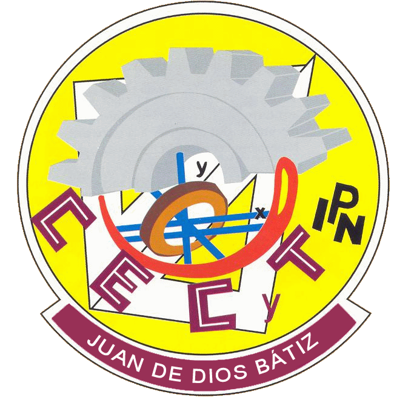

DelgadoLopezClaudioIvan
Programación con Nuevas Tecnologías
Grupo: 4IV8
Este es el portafolio de evidencias de Delgado Lopez Claudio Ivan


Este es el portafolio de evidencias de Delgado Lopez Claudio Ivan
El objetivo del repositorio, a mi punto de vista, es tanto aprender nuevas cosas, pero no solo eso, sino tener herramientas a la mano; en este caso, en un repositorio en la nube, en línea y no de manera local, para que tarde o temprano no tengamos que borrar trabajos por falta de espacio en nuestras máquinas. El repositorio podrá seguir ahí en línea y, cuando lo necesitemos, solo es cuestión de clonarlo.
Todas las prácticas que hemos hecho, sobre todo la lógica de cada práctica, nos ayudaron y nos ayudarán a nuestro Proyecto Aula, tanto el de 4to semestre como el de 5to y 6to semestre. Y si lo llevamos al siguiente nivel, hasta nuestra formación tanto académica como laboral; saber que tenemos las herramientas que posiblemente no nos enseñen de nuevo y que, para no requerir tanto el uso de la IA o de videos en YouTube, podemos ir aquí y agarrar y transformar un código funcional en una página en otra, solo cambiando variables o agregando más.
Aprendí mucho de esta materia, tanto sobre cómo funcionan las páginas web, ya que es muy diferente una página web de una aplicación de escritorio basada en líneas de comando, como en Java. Ahora, usando JS o JavaScript, siendo una parte fundamental de la materia. Al principio hacíamos páginas web con HTML y CSS, como las que hacíamos en Computación Básica 2; ahora aplicamos más cosas, como JS y MySQL, aprendiendo más sobre formularios y cómo se usan las APIs para enviar datos a rutas y aplicar métodos, ya sea para actualizar, eliminar o incluso crear algo por medio de los métodos y las APIs.
Aprendiendo sobre los temas principales, los protocolos HTTPS nos ayudan a navegar y visitar internet sin ningún peligro, evitando que nuestros datos, al viajar por los servidores, lleguen a manos de un cracker o de alguien malicioso.
Sobre todo, aprendimos sobre validaciones de datos, dependiendo de qué datos se acepten y cuáles no. Aprendí mucho más que el semestre pasado, y espero que el siguiente semestre aprendamos más acerca del tema de la ciberseguridad, donde sí requeriremos más validaciones para evitar ataques.